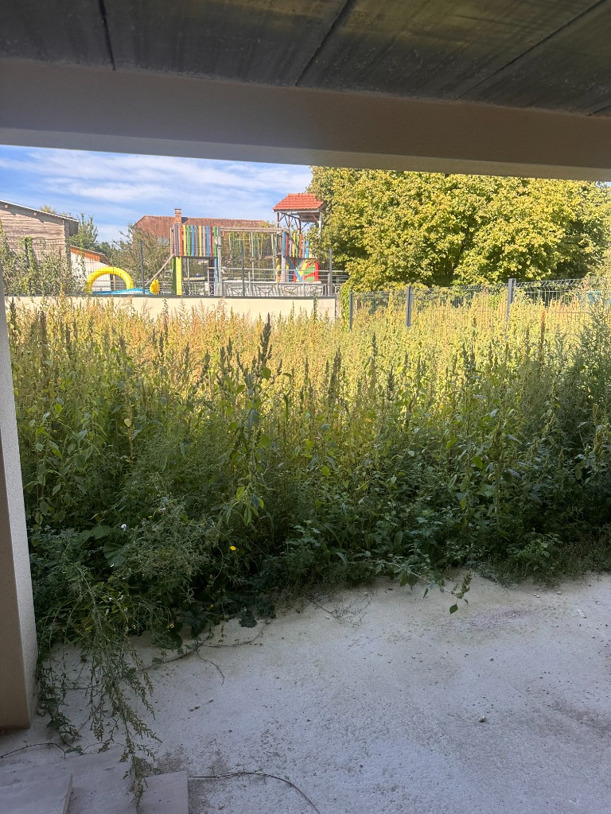
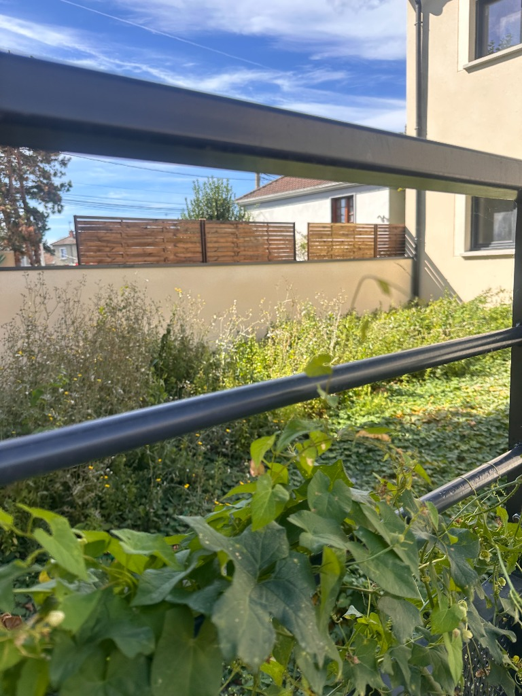
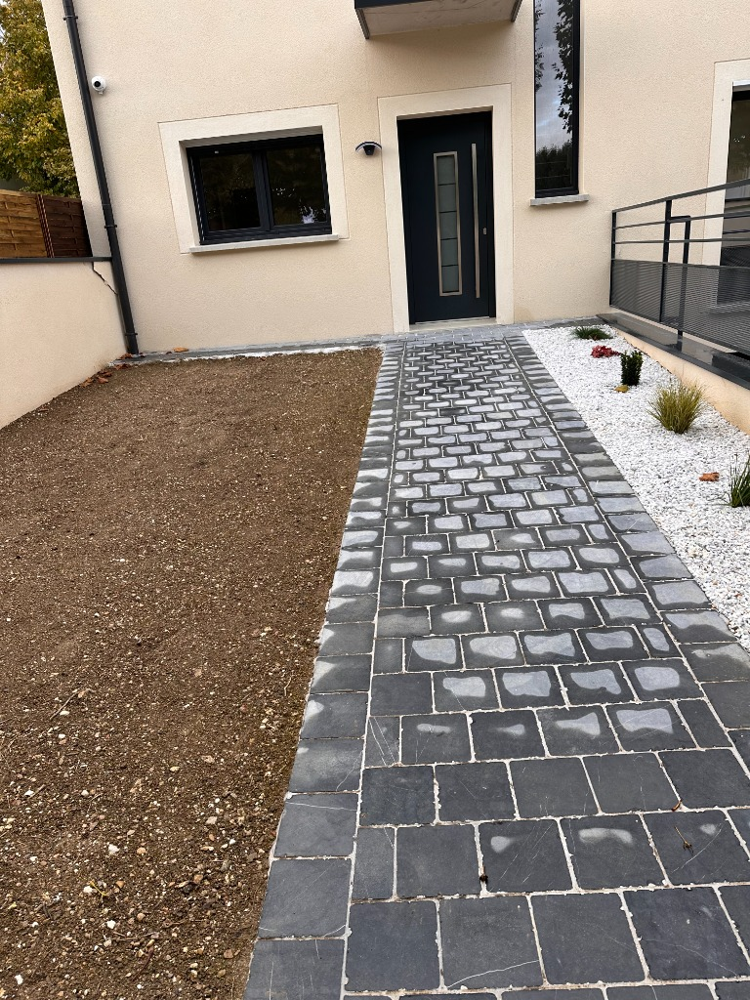
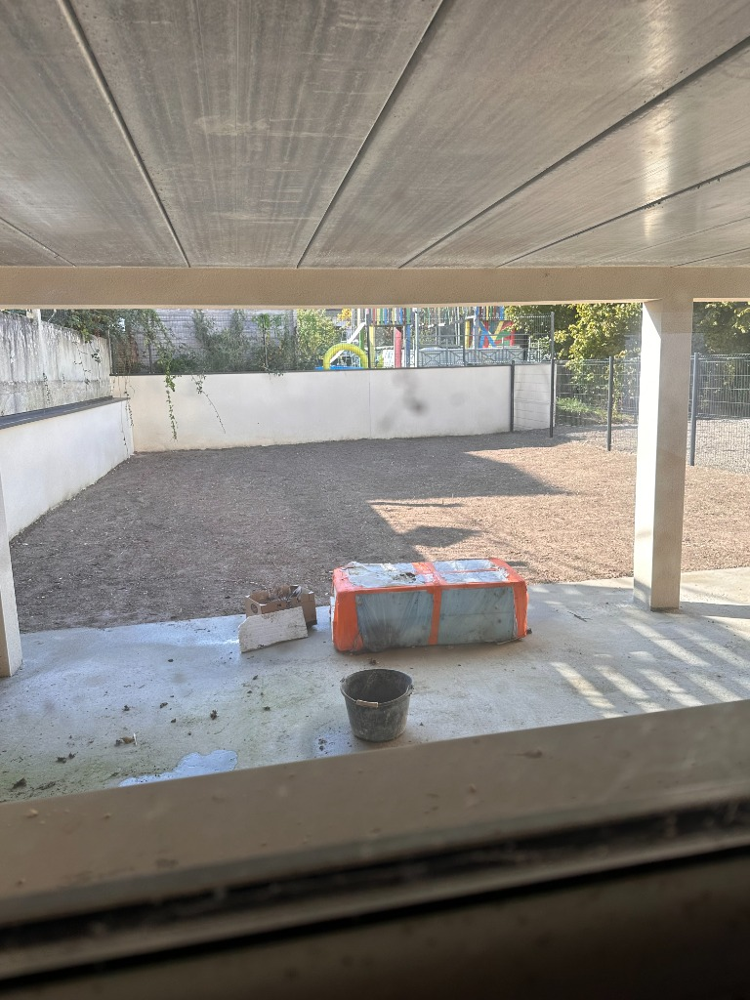

Remise en État
Un jardin laissé à l'abandon ? Nous intervenons pour le débroussaillage, l'évacuation des déchets verts et le nettoyage complet de vos extérieurs. Redonnez vie à votre jardin pour repartir sur des bases saines.